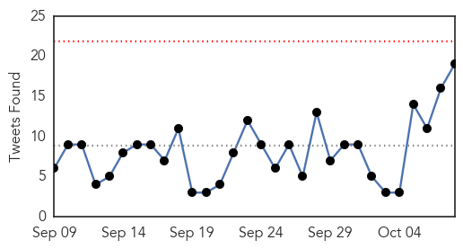
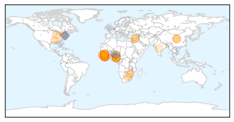
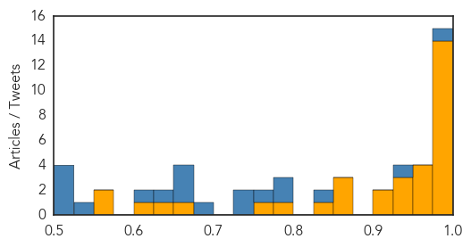

Toggle navigation
Early Warning
Daily Alerts
Ebola
Oct 08, 2015
Compare to:
-
Dengue Fever
Hemmorhagic Fever
Mold/Fungal Infection
Influenza
Meningitis
Pertussis / Whooping Cough
Middle East Respiratory Syndrome
Cholera
Hepatitis
Chikungunya
Yellow Fever
Bubonic Plague
West Nile Virus
Swine Flu
Measles
Unknown
Mumps
30 Day Trends
Web: 0
alerts
, 0
warnings
Twitter: 0
alerts
, 0
warnings
Top Articles:
1.000
Ebola: first week without a new case of disease
1.000
No new Ebola cases for a full week
1.000
Ebola scare in Nigeria false alarm: WHO
1.000
African Ebola Epidemic Shows Signs of Winding Down
0.999
First full week with no new Ebola cases since March 2014
0.999
Daily Online Fresh News From Around The World
0.997
World records first Ebola-free week since 2014
0.996
No new Ebola cases in past week
0.996
No new Ebola case in one week, says WHO
0.995
Ebola countries record first week with no new cases
0.994
Does Malaria Give Ebola Patients Better Survival Odds?
0.988
Fear of fresh Ebola outbreak hits Calabar
0.987
FG dispatches medical team as Ebola scare hits Calabar
0.987
Doctor Who Survived Ebola Describes Disease's' Aftermath on the Body
0.972
Ebola scare hits Nigeria again, 10 quarantined in Calabar
0.970
Statement from USAID Associate Administrator Eric Postel on Sammie's Award
0.967
10 critical mistakes in last year's Ebola outbreak
0.959
China to Build 100 Hospitals and Clinics across Africa
0.950
Why global businesses should be prepared for pandemics
0.947
Christian Aid tentatively welcomes a week without Ebola in West Africa
0.942
Liberia needs 40,000 Doctors
0.908
During Ebola…Significant increase in maternal mortality VSO report « Awoko Newspaper
0.902
MMWR News Synopsis for October 8, 2015
0.871
China to build 100 hospitals, clinics in Africa
0.867
Chinese govt to build 100 hospitals in Africa
0.863
CDC selects two Baltimore colleges to receive grants to stop disease spread
0.838
'Doctors' strike helped curtail Ebola spread'
0.790
Sierra Leone: Press zooms on Ebola and elections
0.770
As Deadly Ebola Rages On, Liberian Leader Calls On Citizens To Seek "God’s Face”
0.670
the vaccine that left a scar — NewsWorks
0.630
Three people have been taken to a trauma centre in serious condition after a two-car crash at Martin Grove Rd :: AD HOC NEWS
0.612
One year later, Ebola still haunts Sierra Leone classrooms
0.565
The ‘New Anarchy’ and Global Health Governance before another ‘Ebola’
0.553
The El Nino crisis you’ve never heard of
Top Tweets:
0.984
interpreted haemorrhagic fever as (Ebola Virus) in their report. Please note there is no Ebola Diagnosing Center in Edo 2/3
0.942
Sociocultural Dimensions of the Ebola Virus Disease Outbreak in Liberia anthropology
http://t.co/Xd8pvBny2J
0.827
RT: No confirmed Ebola cases were reported in the week to 4 October. First time that a complete epi week has 0 confirmed cases since …
0.790
Ebola Cases Hit Zero - MedPage Today
http://t.co/2G8nbRfVX1
ebola EVD
0.783
No new cases of Ebola reported for first time since March 2014 – UN health agency - UN News Centre
http://t.co/qtYnzrImLI
ebola EVD
0.752
Rapid diagnosis and isolation can slow an Ebola outbreak. Ebola treatment units labs play a critical role
http://t.co/v9WFrkg48h
0.746
WHO Reports No new Ebola Cases in Past Week - Bella Naija
http://t.co/xbuHcZNPfb
ebola EVD
0.737
No new Ebola cases – WHO - The Nation Newspaper
http://t.co/nyiw5OAkzD
ebola EVD
0.687
Doctor Who Survived Ebola Describes Disease's Aftermath on the Body - Live Science
http://t.co/1m3siMrw3Y
ebola EVD
0.662
RT: Ebola countries record first week with no new cases -
http://t.co/ISZyGbeP4Z
Ebola
0.651
Ebola scare hits Nigeria again 10 quarantined in Calabar - Vanguard
http://t.co/XBn1VOcpgN
ebola EVD
0.650
For the first time since the outbreak started zero cases of Ebola recorded in one week (to Oct 4) @WHO says.
0.626
10 quarantined in Nigeria over Ebola scare - Fox News
http://t.co/PdmkZLmeZl
ebola EVD
0.621
Ten quarantined in Nigeria over Ebola scare - Eyewitness News
http://t.co/FRglAtEdDA
ebola EVD
0.539
First Person to Contact Ebola in U.S. to Appear at Convention in Hyannis - GoLocal Worcester
http://t.co/CYBwN1hjx9
ebola EVD
0.523
RT: You boring blank empty colourless beautiful Ebola virus weekly case map
http://t.co/cnoEHjCPDf
0.523
RT: You boring blank empty colourless beautiful Ebola virus weekly case map
http://t.co/cnoEHjCPDf
0.523
RT: You boring blank empty colourless beautiful Ebola virus weekly case map
http://t.co/cnoEHjCPDf
0.513
What Happened to Liberia's Ebola Orphans? - Irin
http://t.co/WgW8Cm9iIE
ebola EVD
Web/News Articles
Tweets

Article Locations

Article Confidences
